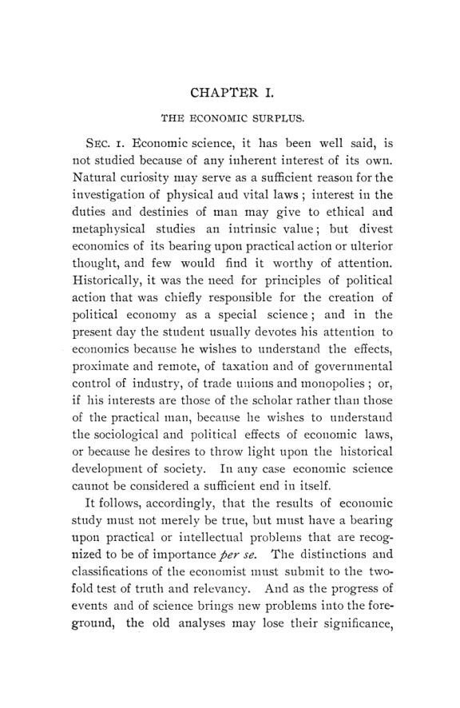

Johnson, 1902: a renda da terra é uma renda como as outras?
Leitura: 10 min
Em 1902, Alvin S. Johnson testou as distinções clássicas entre a renda da terra e os salários e juros. Sua conclusão: só a dinâmica do crescimento dos fatores justifica tratá-la à parte.


Num campo de batatas, os primeiros trabalhadores colhem muito. Os que vêm depois precisam cavar e rastelar a terra com mais cuidado e colhem bem menos. O último obtém com dificuldade o que recebe, e os primeiros não podem receber mais do que ele. O exemplo é de Johann Heinrich von Thünen, e Alvin Saunders Johnson o usa para mostrar como a teoria costuma contar a origem da renda da terra: cada trabalhador adicional seria um sinal para o empregador cortar o salário de todos, e o ganho passaria logo ao proprietário.
Johnson não aceita a moral da história. Rent in Modern Economic Theory: An Essay in Distribution saiu em novembro de 1902 como o nº 4 do vol. 3 da terceira série das Publications of the American Economic Association, com 129 páginas e sete capítulos. No prefácio, assinado na Columbia University, o autor afirma que os elementos essenciais da teoria da renda são conhecidos de todo estudante sério; as divergências viriam da ênfase dada a cada aspecto. Declara que suas posições se apoiam em grande parte nas teorias de J. B. Clark e agradece a E. R. A. Seligman e F. A. Fetter, que leram o manuscrito.
Por que reclassificar uma renda tão antiga?
O ponto de partida é metodológico. Para Johnson, a economia não é estudada por interesse próprio, e suas classificações precisam passar por um teste duplo: verdade e relevância. Os economistas, observa ele, já puseram a renda ao lado do lucro, dos juros ou do retorno de monopólio, conforme o traço que parecia decisivo, e costumam supor que a classificação vem da natureza das coisas. Como os problemas mudam, a análise também muda:
“A obra da teoria econômica, portanto, nunca está concluída.” (“The work of economic theory, therefore, is never done.”)
Na conclusão, ele explicita as duas premissas do ensaio: a distribuição da renda é o problema central da economia, e a concorrência continua sendo o princípio econômico mais essencial, ainda que mude de forma. Johnson reconhece que essa segunda premissa seria contestada numa época impressionada com sinais de uma nova ordem monopolista.
O que é, afinal, um excedente?
O primeiro capítulo percorre os vários “fundos de excedente” da literatura: o produit net dos fisiocratas, o excedente dos materialistas históricos, a energia excedente da teoria do progresso de Simon Patten e o excedente de satisfação, ou renda do consumidor. Sobre este último, Johnson sustenta que não tem força econômica: um ato é praticado quer os motivos a favor superem por pouco, quer por muito, os motivos contra. O excedente do consumidor seria, nas suas palavras, um epifenômeno.
Daí sua definição: o excedente dinâmico, a renda que provoca mudança e tende a desaparecer, é “o excedente econômico por excelência”. Salários normais servem de tipo para as rendas-padrão, que tendem a se perpetuar; o lucro puro, para o excedente. A pergunta do livro passa a ser de qual lado fica a renda da terra.
A terra é mesmo diferente do capital?
O segundo capítulo descarta, uma a uma, as distinções correntes. Que a terra não é feita pelo trabalho? Os terraços da Europa devem sua utilidade ao esforço humano, e um campo limpo de pedras foi tão transformado quanto o ferro extraído do minério. Que o essencial da terra é a extensão ou a situação, como sustentavam John R. Commons e Alfred Marshall? A carne pode ser bem livre em partes da América do Sul, e ninguém diria por isso que só a situação lhe dá valor em Nova York. Que o valor da terra excede seu custo? Sob concorrência livre, diz Johnson, a terra teria custo igual ao valor, como o capital.
A distinção que ele mantém é outra. A superfície geográfica é fixa, mas a terra econômica, a parte acessível ao homem, cresce com a recuperação de pântanos e desertos, com transporte melhor e com novos métodos. O que separa terra e capital é que as leis desse crescimento não são as mesmas: quando os juros sobem, a renda pode cair, e a renda pode subir num período de juros em queda. Renda, para Johnson, é o que o dono da terra efetivamente recebe.
A renda é uma renda “não ganha”?
O terceiro capítulo trata da visão popular, que vê na renda o rendimento obtido por privilégio, e cita a farpa de Adam Smith contra os proprietários que gostam de colher onde não semearam e a acusação de exploração em Henry George. Johnson responde que, pelo critério da dor ou do sacrifício, parte dos salários e dos juros também seria não ganha; e que o critério moderno, a produtividade, não separa a renda dos demais rendimentos. Além disso, ganho e não ganho descrevem a relação entre uma renda e uma pessoa, não uma qualidade da fonte:
“O roubo não adere a uma moeda que um dia foi roubada.” (“Theft does not adhere to a coin that has once been stolen.”)
A distinção entre parte necessária e parte dispensável de uma renda também não isola a terra. O que decide é a capacidade do dono de retirar o fator de um emprego e levá-lo a outro. A divisão real, conclui, não é entre a renda e os salários e juros, mas entre os rendimentos dos agentes imóveis e dos móveis, sejam terra, trabalho ou capital. A tese de Ricardo, Sismondi e Buchanan, de que a renda é mera transferência do consumidor, recebe resposta semelhante: como renda monetária, a renda não acrescenta riqueza, mas salários e juros também não; como produto específico, os três acrescentam.
Ser diferencial e residual distingue a renda?
No quarto capítulo, Johnson toma a formulação de Francis A. Walker: a renda nasce dos diferentes graus de produtividade das terras que abastecem o mesmo mercado, e a pior terra não paga renda. A objeção é antiga, diz ele: quando a demanda cresce, a parte do proprietário aumenta de imediato, sem esperar o cultivo da terra pior. O surgimento da renda nas terras melhores e o uso das piores são efeitos diferentes da mesma causa.
Quando Ricardo escreveu, a terra disponível crescia devagar e a renda subia, enquanto trabalho e capital aumentavam depressa. Era natural supor a terra fixa. Johnson inverte o exercício: imagine-se o Estado isolado de von Thünen anexando, por transporte melhor, uma grande área antes inútil. Cada estabelecimento acrescentaria acres e o produto dos acres sucessivos cairia, numa série diferencial idêntica à das doses de capital e trabalho. Os termos diferencial e residual, propõe, devem ser reservados ao retorno dos fatores estritamente monopolistas, sejam terras, navios, edifícios ou o trabalho de um gerente.
A renda entra no preço?
O quinto capítulo enfrenta a tese clássica, na versão de Walker: o preço normal do trigo é fixado pelo custo nas terras menos produtivas cultivadas, que não pagam renda; logo, a renda não faz parte do preço. Johnson classifica as críticas em três linhas e acrescenta a sua: o argumento supõe na premissa o que pretende provar, que o uso da terra não é custo.
O que governa a relação com o preço é a mobilidade. Se toda a terra só produzisse trigo, como supunha Ricardo, o proprietário seria um recebedor passivo do que sobrasse. Mas a terra, sustenta Johnson, é móvel no mesmo sentido que o trabalho e o capital, e nos três casos são as unidades capazes de mudar de emprego que controlam o preço. A conclusão do capítulo é direta:
“em sua relação com o preço, a renda não difere das outras rendas produtivas” (“in its relation to price rent does not differ from other productive incomes”)
Renda, lucro e monopólio são o mesmo fundo?
Patten sustentava que renda e lucro de monopólio eram um só fundo visto de dois modos. Johnson discorda: o rendimento de monopólio vem de uma limitação artificial que eleva a produtividade e desaparece com mais concorrência; a renda vem da produtividade, apoiada em última instância numa limitação natural. O monopolista opera limitando a quantidade de agentes produtivos num ramo; por isso, retirar um trabalhador de um monopólio causa perda maior do que num setor competitivo. Exploração, avisa o autor, é termo sem sentido ético no capítulo: designa o agente que não recebe o que produz. Sobre o lucro, ele revisa Samuel Read, a teoria do risco de von Thünen e Walker e diz inclinar-se a tratar o ganho do empresário superior como forma especial de salário.
Na minha leitura
Na minha leitura, o mérito do ensaio está no método. Johnson não pergunta o que a renda é em essência, mas para que serve a categoria. Aplica a todos os fatores o mesmo teste de retirada de uma unidade, que é a produtividade marginal, e com ele dissolve quase todas as fronteiras herdadas da economia clássica. O que sobra é a mobilidade: a parte necessária de qualquer rendimento é a que impede o fator de migrar. É, em germe, a separação que a teoria posterior faria entre o pagamento necessário para manter um fator em seu uso e o excedente sobre esse mínimo, aplicável a terras, pessoas e máquinas.
O limite também está na premissa declarada. O argumento depende de concorrência efetiva, e o próprio autor admite que as rendas de fricção e de monopólio quase não se deixam classificar no estado do conhecimento da época. Para a política econômica, a consequência é dupla. A razão analítica para tratar a terra como base tributária singular fica mais fraca. Mas a tese de que a tributação pouco altera a oferta quando recai sobre unidades imóveis vale para qualquer fator nessa condição, e é por esse critério, não pelo nome da renda, que o dilema deveria ser julgado.
Glossário
- Renda da terra (rent)
- rendimento pago pelo uso da terra; no ensaio, o que o proprietário efetivamente recebe.
- Produit net
- na fisiocracia, o excedente da produção agrícola sobre o sustento de quem a realiza.
- Excedente do consumidor
- diferença entre o que alguém estaria disposto a pagar e o que paga; Johnson o considera sem força econômica.
- Excedente dinâmico
- rendimento que provoca mudança e tende a desaparecer, como o lucro puro.
- Renda diferencial
- renda medida pela diferença de produtividade entre unidades de terra ou entre doses aplicadas à mesma terra.
- Renda residual
- renda calculada como o que sobra do produto depois de pagos trabalho e capital.
- Lei intensiva da renda
- versão em que doses sucessivas de trabalho e capital na mesma terra rendem cada vez menos.
- Terra econômica
- a parte da superfície efetivamente acessível e útil, que cresce com transporte e técnica.
- Mobilidade
- capacidade de um fator mudar de emprego; para Johnson, o que liga um rendimento ao preço.
- Rendimento exploratório
- no ensaio, parte do produto de um agente apropriada por outro, sem juízo ético.
Fontes
- Rent in Modern Economic Theory: An Essay in Distribution (pp. 1–129). JSTOR · Internet Archive (PDF)
- Sumário da edição no JSTOR: Publications of the American Economic Association, 3ª série, vol. 3, nº 4.
Documento em domínio público (EUA, publicado antes de 1931), via JSTOR Early Journal Content e Internet Archive. Resumo e comentário do autor deste site, sem afiliação com a American Economic Association. Encontrou um erro? Escreva: a correção é publicada no próprio texto, com data.
← Nº 63 · Robinson, 1902: dois séculos de impostos em New Hampshire Nº 65 · Filadélfia, 1902: fretes, salários, sindicatos e o papel do economista →